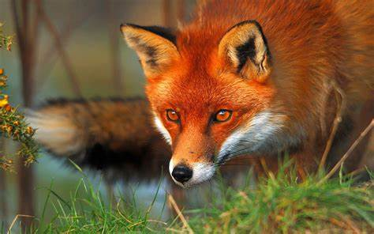

Fox

Foxes are small to medium-sized, omnivorous mammals belonging to
several genera of the family Canidae.
They have a flattened skull, upright, triangular ears, a pointed,
slightly upturned snout, and a long bushy tail (or brush). Twelve
species belong to the monophyletic "true foxes" group of genus Vulpes.
Approximately another 25 current or extinct species are always or
sometimes called foxes; these foxes are either part of the
paraphyletic group of the South American foxes, or of the outlying
group, which consists of the bat-eared fox, gray fox, and island
fox.[1] Foxes live on every continent except Antarctica. The most
common and widespread species of fox is the red fox (Vulpes vulpes)
with about 47 recognized subspecies.[2] The global distribution of
foxes, together with their widespread reputation for cunning, has
contributed to their prominence in popular culture and folklore in
many societies around the world. The hunting of foxes with packs of
hounds, long an established pursuit in Europe, especially in the
British Isles, was exported by European settlers to various parts of
the New World.